Légy oly kedves és fejeld meg ott azt a kék szöveget
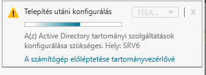Miután ezt megtetted ez az ablak fog fogadni
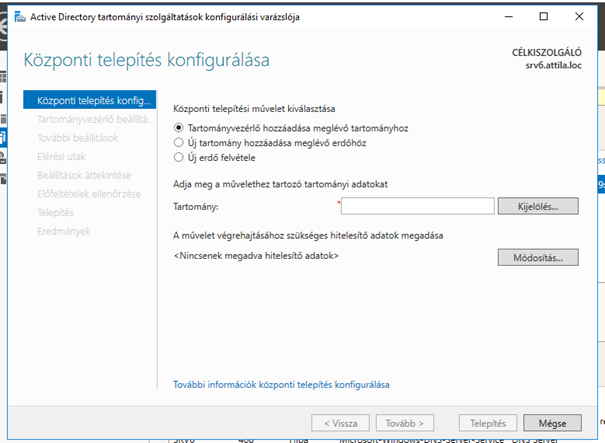Itt új erdőt veszel fel és megadod a gyökértartományt ami a már felkonfigurált zónád lesz
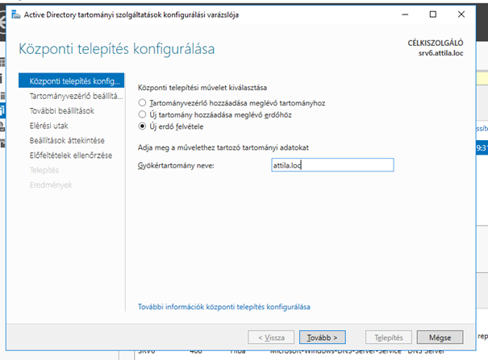Ezt követően nem piszkálunk semmit csak állítunk egy tetszőleges jelszót (Amit lehetőleg meg is jegyzünk!!)
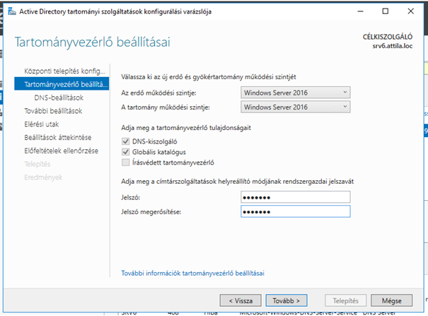Beállítjuk a DNS-t
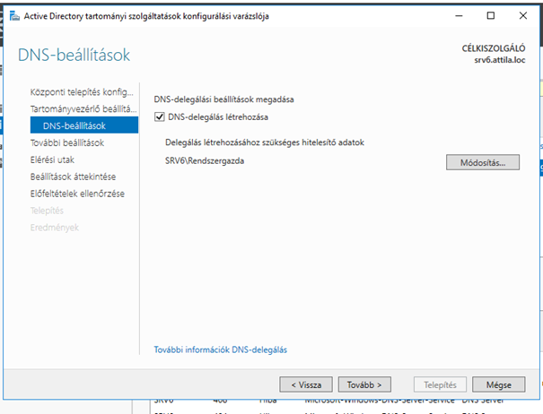A NetBIOS módosítása után be kell jelentkezni
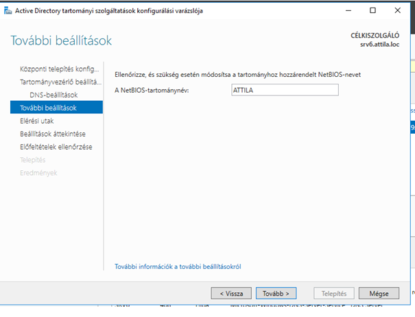Ezután nem változtatunk semmit ha ezt látjuk jó lesz
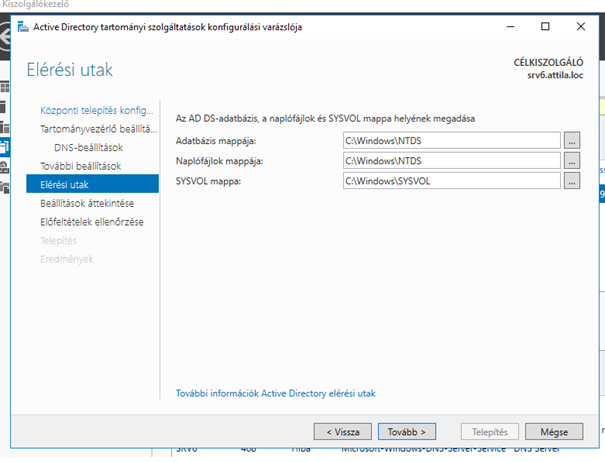Ezen a felületen szintúgy
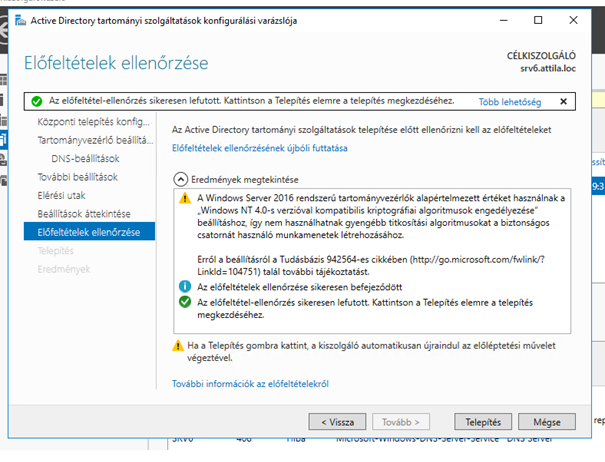Itt ezt ezt látni ha nem akkor nem sikerült a telepítés újra az egész folyamatot.
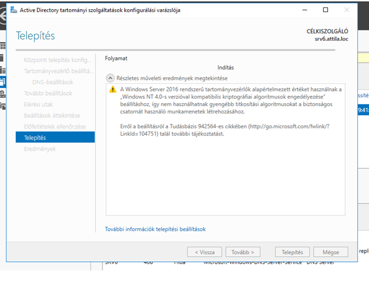Fel veszünk egy új felhasználót
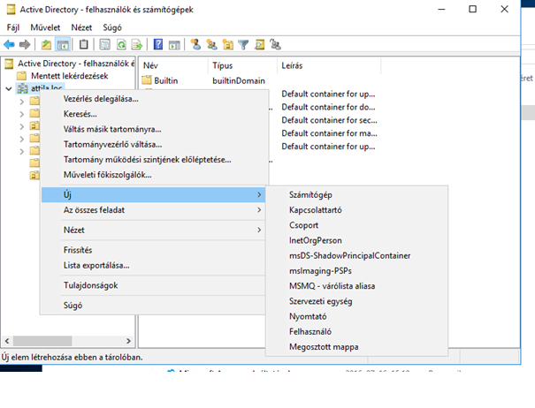Mégegyszer
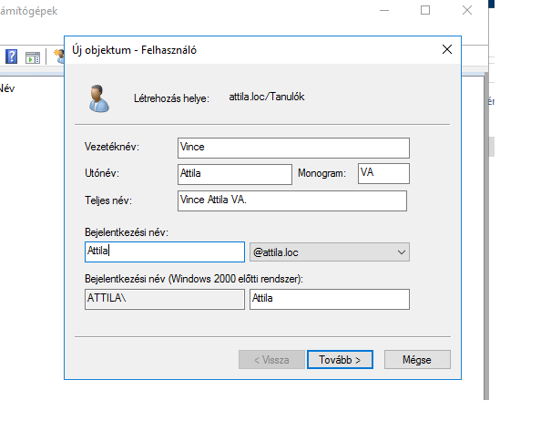A jelszó soha ne járjon le
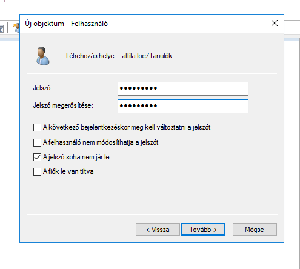Ha ez kész konfiguráljuk a DHCP-t
LásdHa ez is kész beléptetjük a klienst a tartományba.
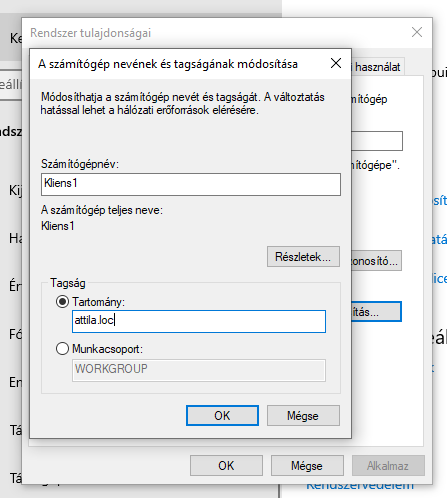Végül újra kell indítani mindent.